CRM-munka kézzel: lead-től az üzletig
Konvertálás, pipeline, kézi cégfelvitel: megtapasztalod, mit tart nyilván egy CRM, és mennyi kattintás kézzel. A képek friss, 2026-os felületről készültek.
- érted a CRM alapfogalmait a saját rendszeredben: lead, contact, account, deal, pipeline;
- kézzel végigvittél egy érdeklődőt a megkereséstől a folyamatban lévő üzletig;
- céget és kapcsolattartót kézzel is felvettél, nem csak konvertálással;
- tudod, mit fog elvégezni helyetted az API a következő blokkban.
Ismerkedés: lead-ek és konvertálás
Az első napon már felvetted Kiss Mártát (Corner Shop Kft), aki telefonon kért ajánlatot. A példánk továbbra is az Atlas Market világa: a nagykereskedő a CRM-ben tartja nyilván, melyik bolttal hol tart a tárgyalás. Most Márta történetét visszük tovább a megkereséstől az üzletig.
Lead: érdeklődő. Contact: kapcsolattartó személy. Account: ügyfélcég. Deal: értékesítési lehetőség. A pipeline ennek szakaszokon át vezető útja. A konvertálás az érdeklődőből kapcsolattartót és ügyfélcéget hozhat létre, és külön választással értékesítési lehetőséget is.
- Lépj be a CRM-be (crm.zoho.eu), és a bal sávban nyisd meg a Leads modult. Vedd fel a második érdeklődőt is a Create Lead gombbal: Last Name: Nagy, First Name: Péter, Company: Family Foods Kft, Email: peter.nagy@familyfoods.example, Lead Source: Trade Show (kiállításon találkoztatok). Az űrlap ugyanaz, mint az első napon. (Ha Kiss Márta rekordod nincs meg, előbb vedd fel őt is: az adatok az első nap Zoho CRM-fejezetében vannak.)
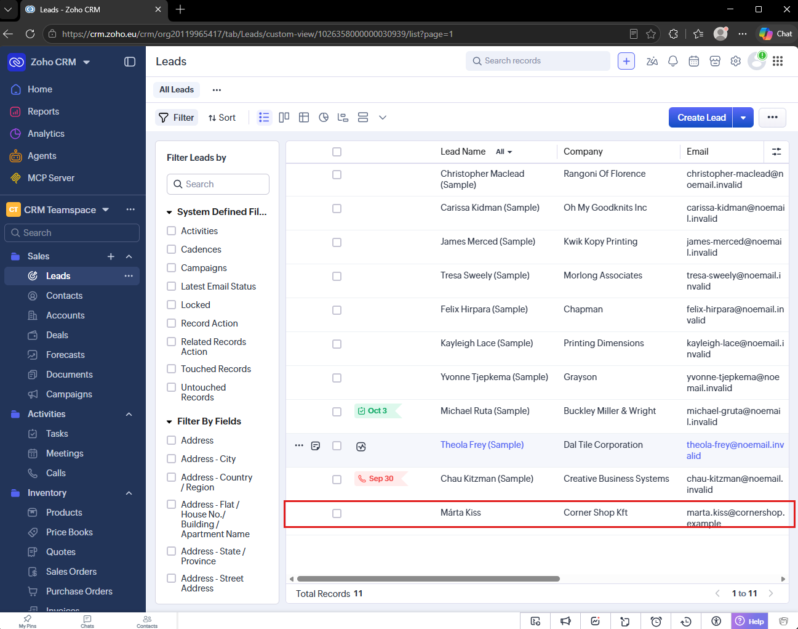
A Leads lista; a keretben a saját, kézzel felvett rekord a mintarekordok alatt - Nyisd meg Kiss Márta rekordját, és nézd meg a Timeline fület: minden, ami a rekorddal történik, itt hagy nyomot. Utána kattints fent a Convert gombra.
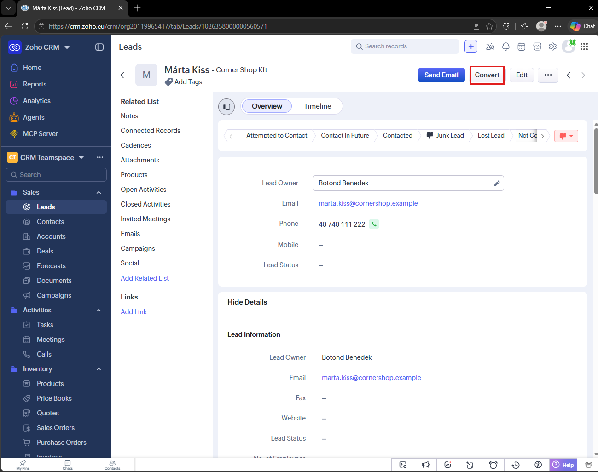
Kiss Márta lead-rekordja; a piros keretben a Convert gomb - A Convert ablak felkínálja az új Account-ot (Corner Shop Kft) és az új Contact-ot (Kiss Márta). Pipáld be a Create a new Deal for this Account lehetőséget.
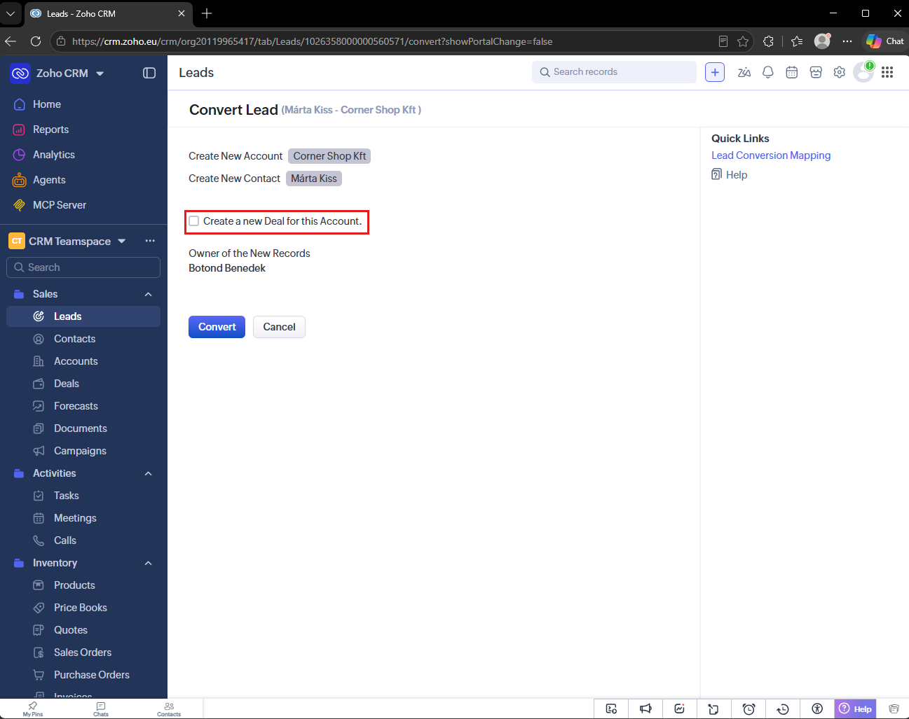
A Convert ablak; a piros keretben a Create a new Deal pipa - Töltsd ki az üzlet adatait: Amount: 4500 (a pénznemet a fiókod területi beállítása adja, nálunk LEI), Deal Name: Corner Shop induló rendelés, Closing Date: kb. 30 nappal későbbi dátum, Stage: Qualification. Végül Convert.
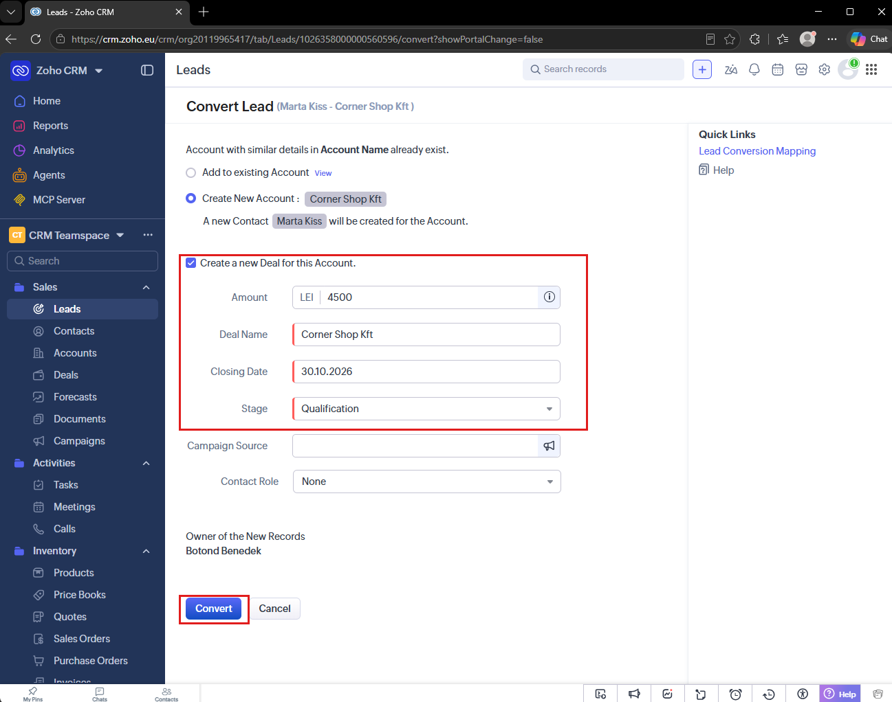
A Convert ablak kitöltött Deal-blokkal; a keretben a mezők és a Convert gomb A képen egy plusz sor is látszik felül: a rendszer jelezte, hogy hasonló nevű Account már létezik, mert a demóban kétszer futottunk neki a konvertálásnak. Nálad ez elsőre nem jelenik meg; ha mégis, az alábbi duplikátum-dobozban megtalálod, mit jelent.
- Az eredményoldal linkeli a három új rekordot: Account, Contact és Deal. Kattints az Accountra, és nézd meg: a Corner Shop Kft oldalán ott a kapcsolódó kapcsolattartó és (a Deals listában) az üzlet is.
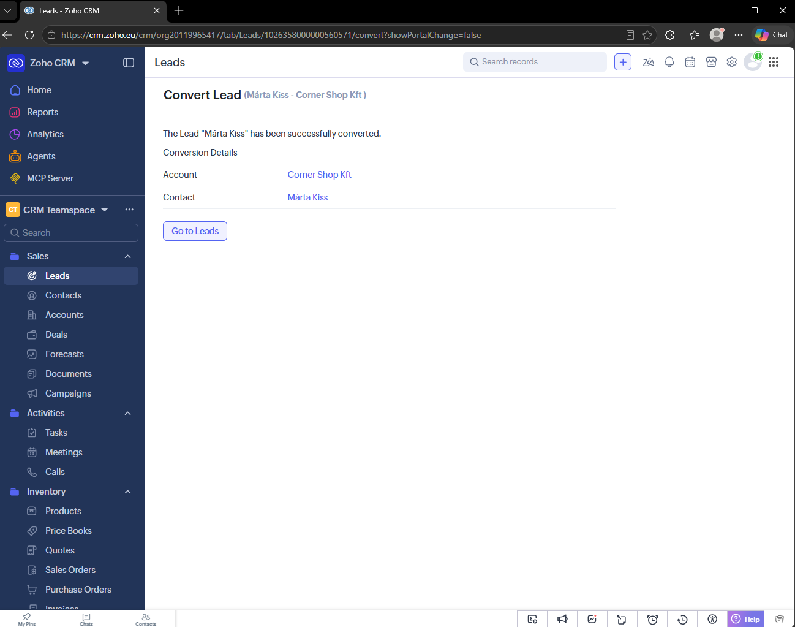
A sikeres konvertálás eredménye az Account és Contact linkekkel 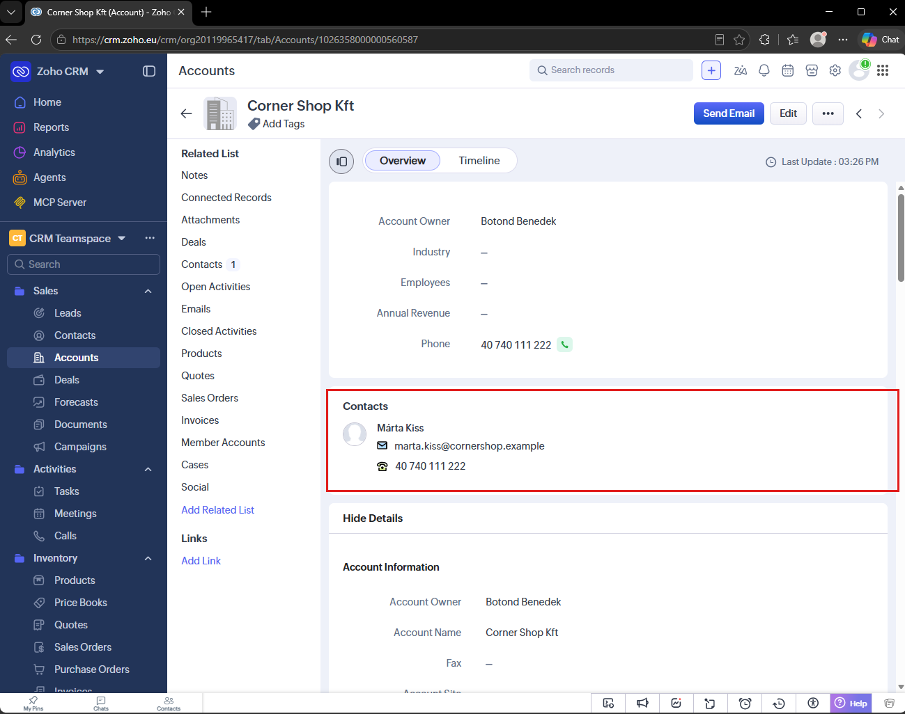
A Corner Shop Kft Account-oldala; a keretben a kapcsolódó Contacts blokk
A Zoho bizonyos egyezésekre figyelmeztethet konvertáláskor. Ha meglévő rekordot ajánl fel, előbb ellenőrizd a cég és a személy adatait; az azonos vagy hasonló név önmagában nem bizonyít azonosságot. Valódi egyezésnél az Add to existing segít elkerülni a duplikátumot. A CRM nem észlel automatikusan minden adatminőségi hibát.
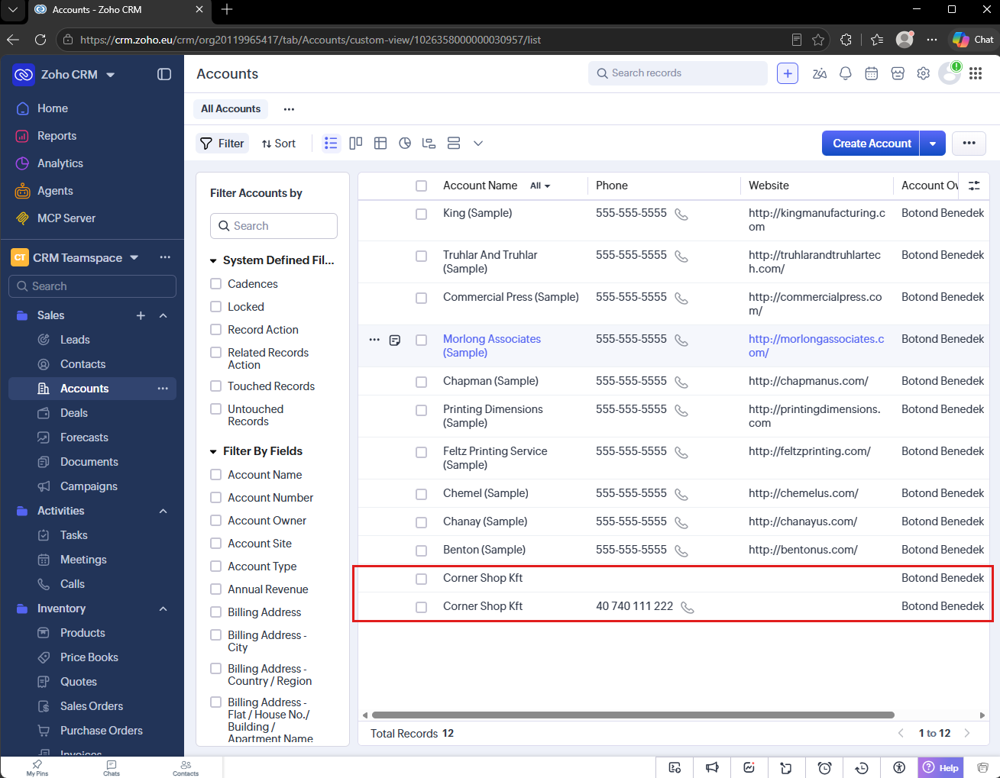
Pipeline: az üzletek áramlása
- Nyisd meg a bal sávban a Deals modult, és váltsd a nézetet a felső ikonsorral Stage (kanban) nézetre: oszlopokban látod az értékesítési szakaszokat, bennük kártyaként az üzleteket. A te kártyád a Qualification oszlopban áll.
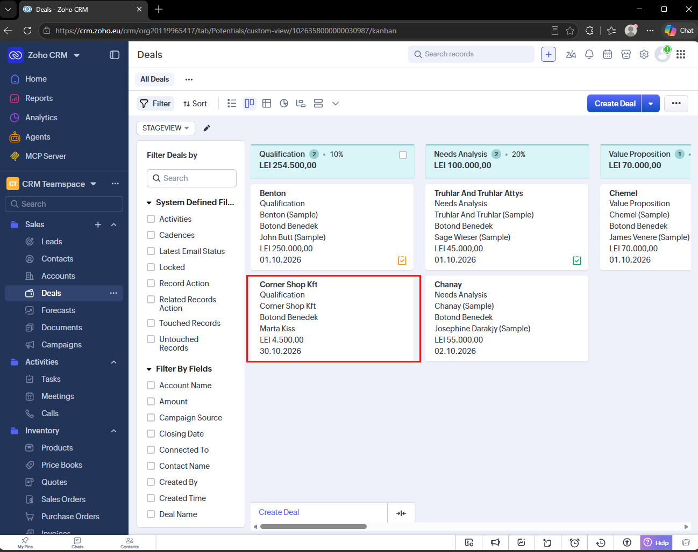
A Deals Stage-nézete; a keretben a Corner Shop kártya a Qualification oszlopban - A Corner Shop kártyát húzd a Needs Analysis oszlopba. Ha a húzás nem elérhető, nyisd meg a Deal rekordot, szerkeszd a Stage mezőt, és mentsd a módosítást. A szakasznevek a fiók beállításaitól függhetnek; eltérésnél válassz tartalmilag megfelelő, következő szakaszt.
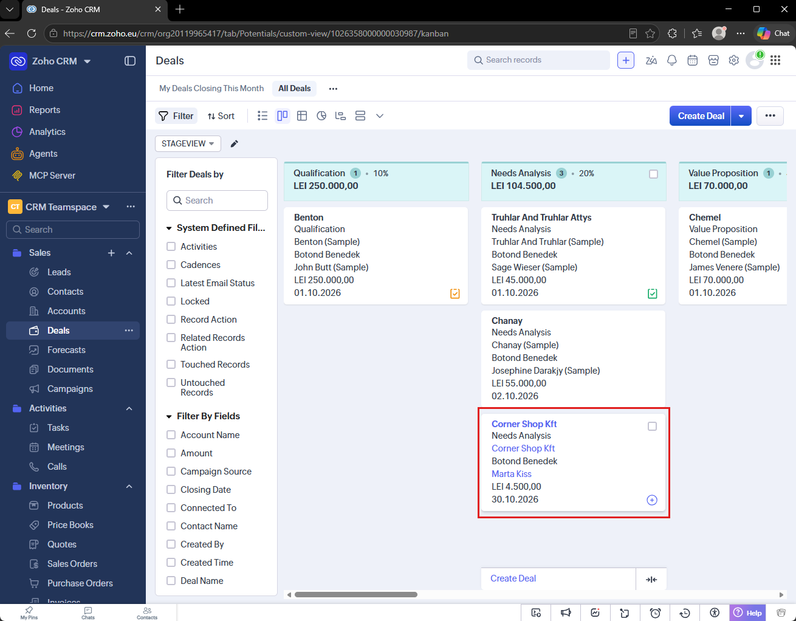
A kártya az áthúzás után a Needs Analysis oszlopban (keretben) - Kattints a kártyára, és nézd végig a Deal rekordját: összeg, szakasz-sáv, várható bevétel, kapcsolódó Account és Contact.
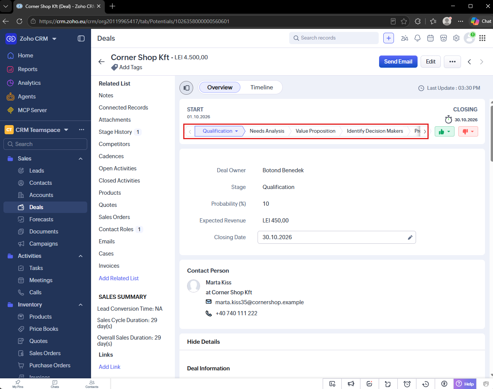
A Corner Shop deal rekordja; a keretben a szakasz-sáv
Cég és kapcsolattartó kézzel
Nem csak konvertálásból születhet cég és kapcsolattartó: partnereket gyakran közvetlenül vesznek fel. Vegyük fel az Atlas Market egyik éttermi vevőjét kézzel.
- Bal sáv: Accounts → Create Account. Account Name: Kék Duna Étterem Kft; lentebb, a Billing Address részben City: Kolozsvár. A többi mező üresen maradhat. Save.
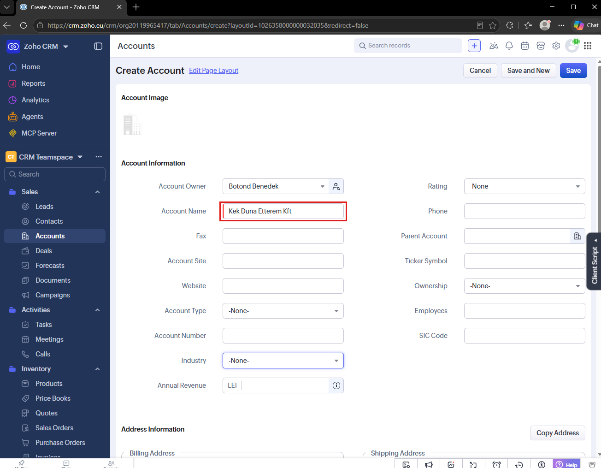
A Create Account űrlap; a keretben az Account Name mező 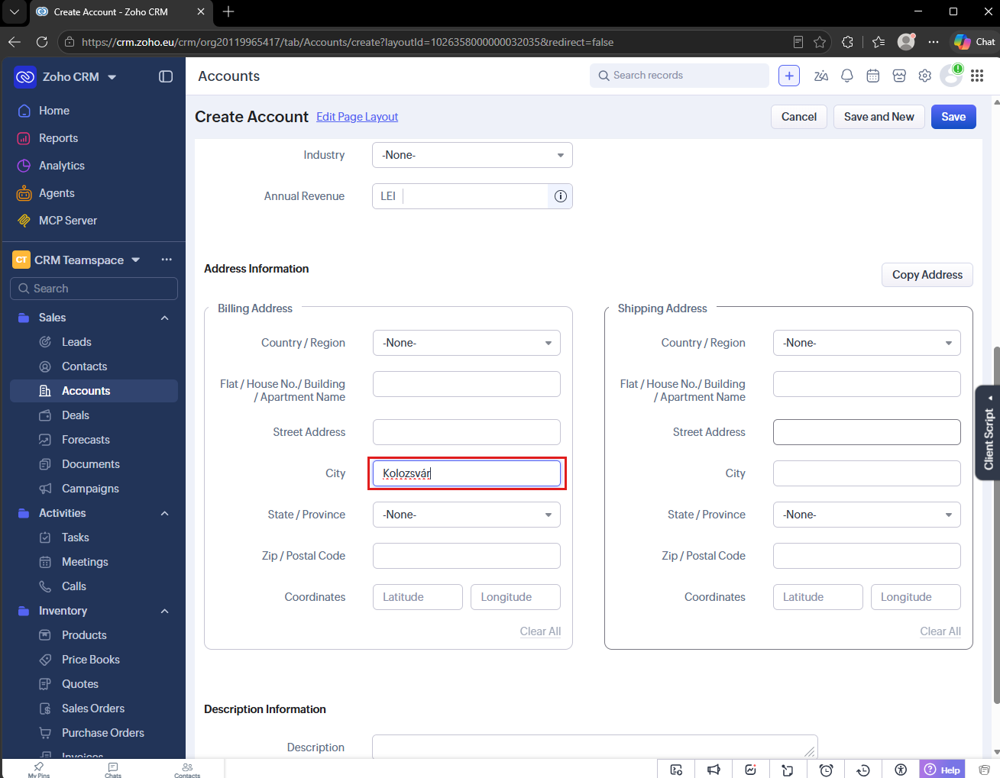
A cím-szakasz; a keretben a City mező - A mentett Account oldalán a bal oldali Related List-ben keresd a Contacts sort, és kattints a mellette megjelenő kék + (Add) gombra.
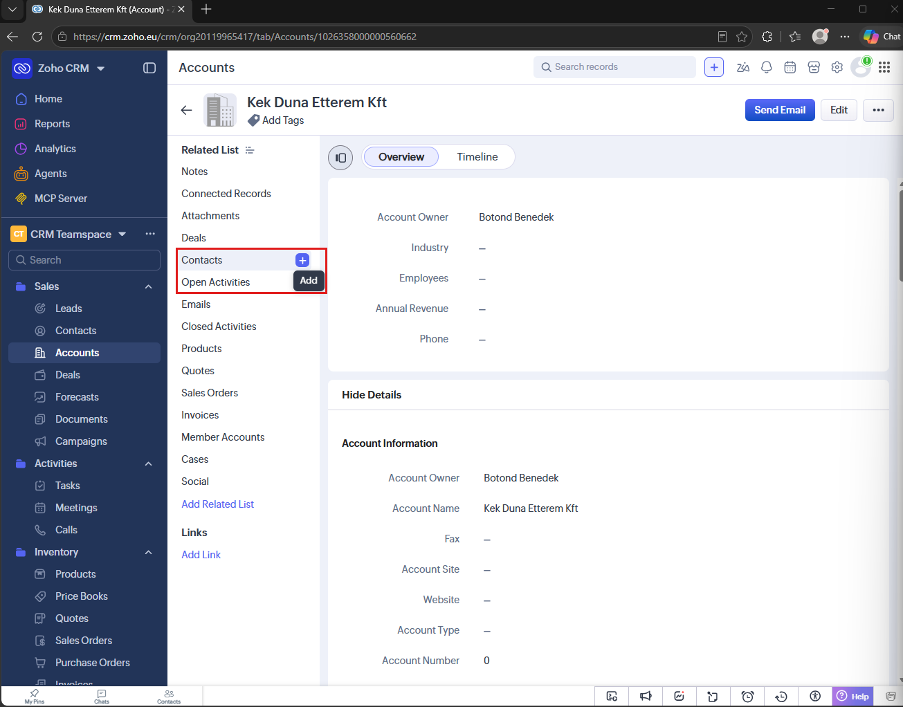
Az Account oldala; a keretben a Contacts sor melletti kék plusz gomb - Töltsd ki a kapcsolattartót: Last Name: Molnár, First Name: Eszter, Email: eszter.molnar@kekduna.example; az Account Name mezőben már ott a Kék Duna. Save.
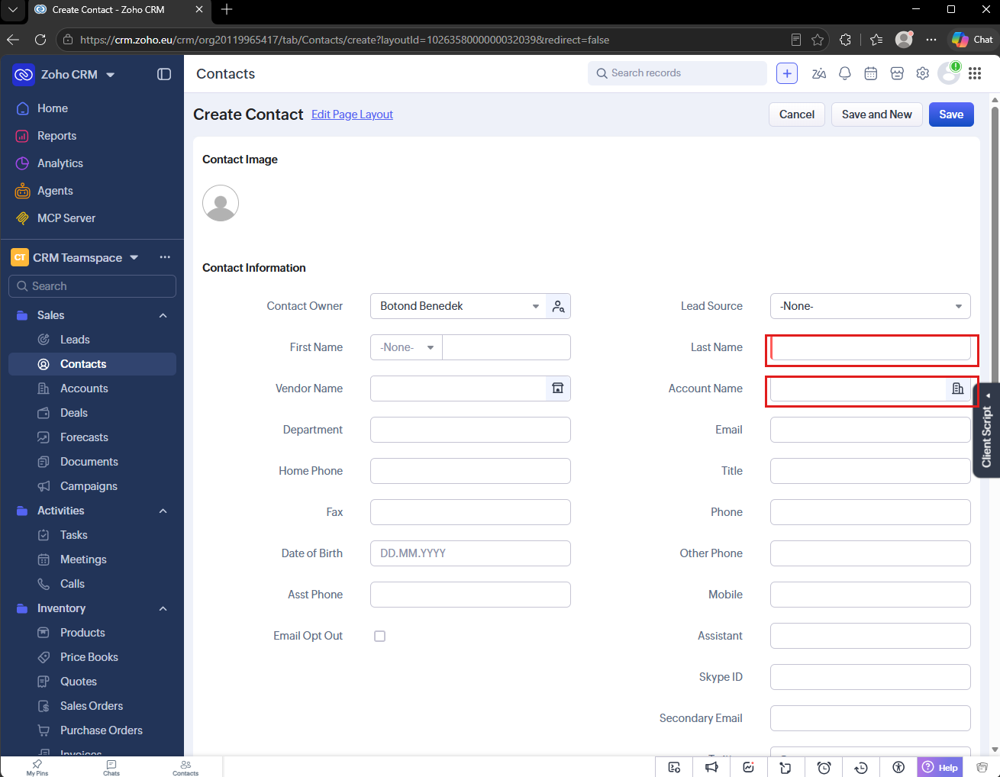
A Create Contact űrlap üresen; a keretben a kötelező Last Name és az Account Name mező 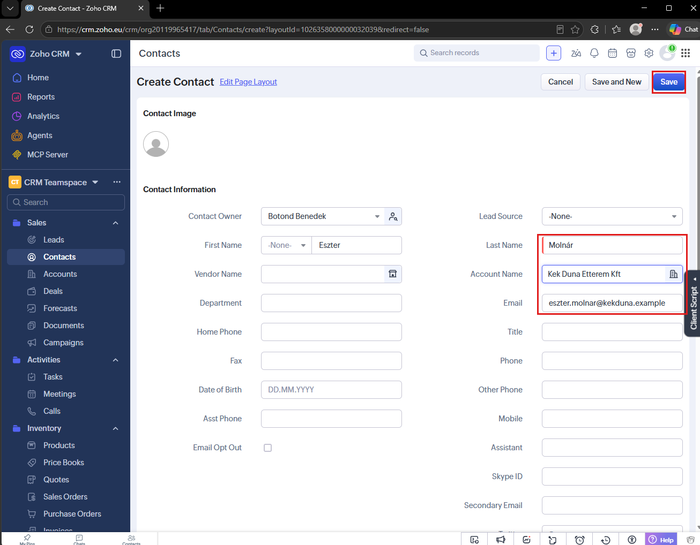
Kitöltve Molnár Eszter adataival; a keretben a mezők és a Save gomb - Mentés után az Account oldalán megjelenik a kapcsolódó kapcsolattartó: a cég és az embere mostantól össze vannak kötve.
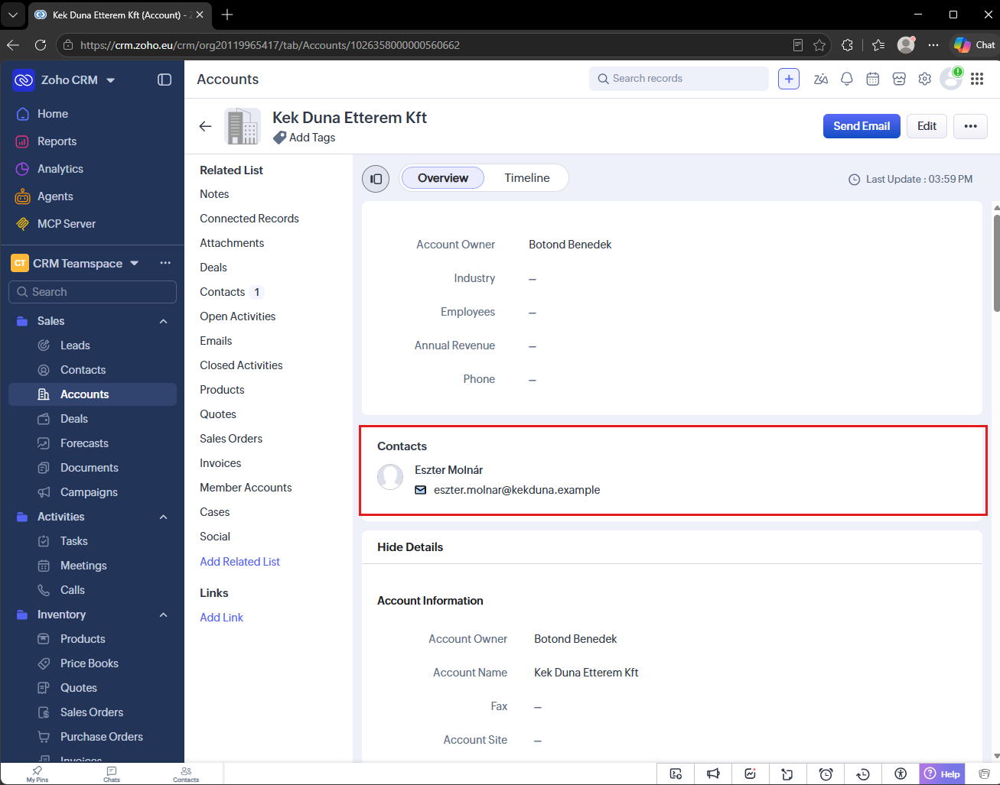
A Kék Duna Account oldala; a keretben a Contacts blokk Molnár Eszterrel
A Contacts közt ott van Kiss Márta és Molnár Eszter, az Accounts közt a Corner Shop Kft és a Kék Duna Étterem Kft, a Deals pipeline-ban pedig a Corner Shop kártya a Needs Analysis oszlopban áll.
Ha mást látsz: ha a Convert után nem találod az üzletet, a Deals modul nézetválasztóját állítsd "All Deals"-re, ahogy a lead-eknél is tetted.
- A következetesen rögzített érdeklődők, hívások és teendők egy helyen kereshetők; a rendszer hasznossága az adatbevitel minőségétől is függ.
- A pipeline ránézésre mutatja, mennyi üzlet van folyamatban és hol akad el.
- A megfelelően rögzített adatokból riport és áttekintés készülhet; az ügyek átadását is segíti a dokumentált történet.
- És ami nekünk a legfontosabb: mindez adat, amit API-n és robottal is lehet írni és olvasni.
Konvertáld Nagy Pétert is, egy 2800 összegű, Family Foods próbarendelés nevű értékesítési lehetőséggel. Közben számold a lépéseket. A következő blokk az érdeklődő programból történő létrehozását mutatja meg; nem végzi el automatikusan ezt a teljes konvertálást és üzletfelvételt.